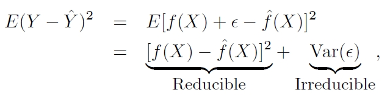

Y = ƒ(X) + ε
ƒˆ means estimation for ƒ
Yˆ means the resulting prediction for Y.
Yˆ = ƒˆ(X) + ε
reducible error
We can potentially improve the accuracy of ƒˆ
irreducible error
ε, no matter how well we estimate ƒ, we can not improve it

The focus of the book is the aim of minimizing the reducible error!
Three question
Which predictors (features) are associated with the response?
What is the relationship between the response and each predictor?
Can the relationship between Y and each predictor
be adequately summarized using a linear equation, or
is the relationship more complicated?